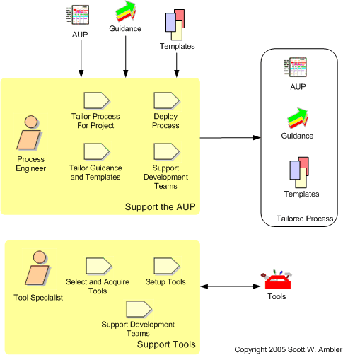

The Environment Discipline
| Home | Phases | Disciplines | Milestones | Roles | Deliverables | Guidance | Help |
|
|
The Environment Discipline |
|
||||||||
|
||||||||||
The goal of this discipline is to support the rest of the effort by ensuring that the proper process, guidance (standards and guidelines), and tools (hardware, software, etc.) are available for the team as needed.

| Phase | Activities |
| Inception | Set up the working environment. Install workstations as
needed as well as software for those workstations. This will be an
ongoing task as people are added to the team over time. Identify the project category. Many organizations develop several base versions of their software process, for example one for small teams, one for legacy system replacement, one for commercial off the shelf (COTS) system installations, and so on. This gives them a head start at tailoring the AUP to meet the exact needs of each project team because a lot of the common tailoring has already occurred. |
| Elaboration | Evolve the working environment. As your project
progresses your understanding of the requirements evolves, your
architectural strategy evolves, and your overall focus. The end
result is that you will need to evolve your environment by installing
new tools, or removing tools you no longer need.
Tailor the process materials. You should tailor the AUP to meet the needs of the team. This may involve editing the AUP process materials (e.g. this page), you may choose to write a short document indicating what you won't be doing, or you may simply choose to "do the right thing at the right time". |
| Construction | Support the team. Project team members will need help
using and/or configuring various tools to meet their needs. They
will also need help to choose the proper documentation templates and
follow your enterprise guidance. Evolve the working environment. See above. Setup training environments. As your deployment planning progresses you may discover that you need to train end users, support staff, and/or operations staff. This training effort may require training rooms and/or training versions of the system available, often during the Transition phase. You may need to start setting these environments up towards the end of the Construction phase. |
| Transition | Setup operations and/or support environments. Support
staff, and sometimes operations staff, often need to have a version of
the system setup which they use to simulate report defects in a safe
manner. Recover software licenses. As your project comes to completion you may need to deinstall software licenses from peoples workstations who no longer need the software so that the licenses may be available to others within your organization. |
 |
Page last updated: September 25, 2005 This page is tailored with permission from Ambysoft Inc.'s Agile UP Product Original page is Copyright © 2005 Ambysoft Inc. |